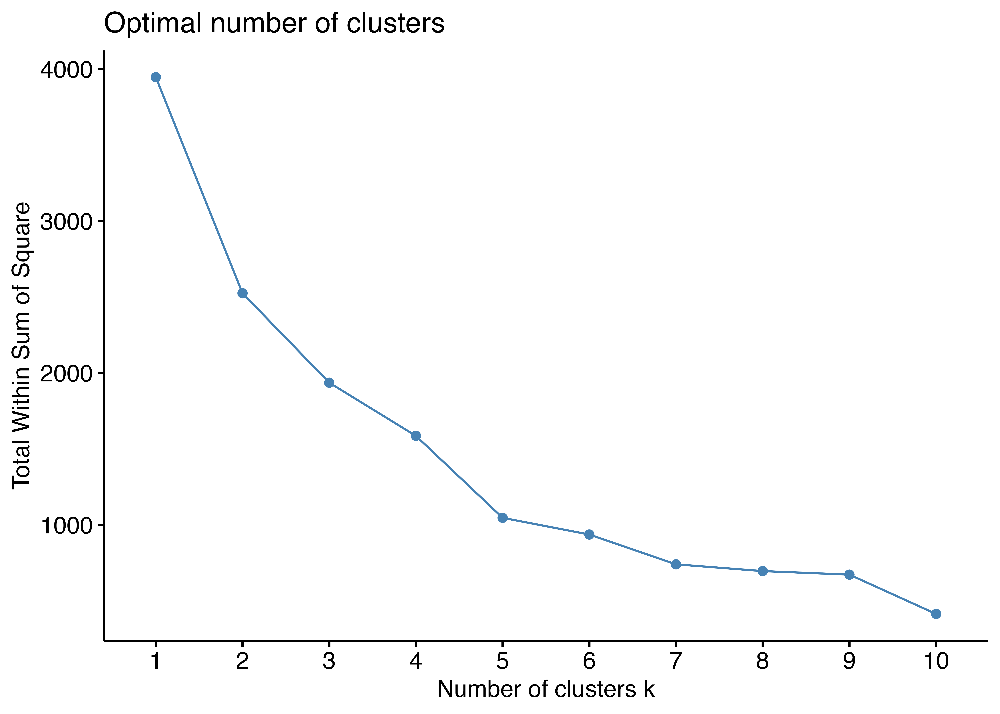
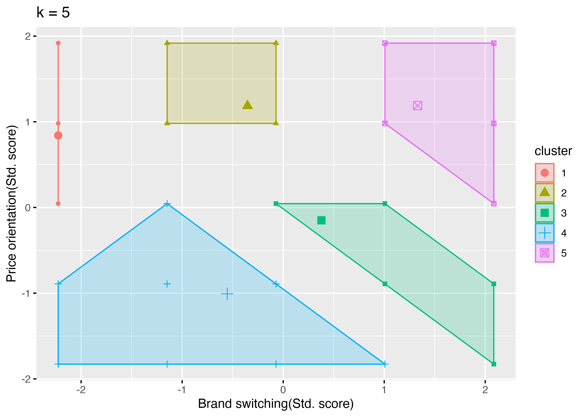

7 第10章 セグメントとクラスター分析
クラスター分析(cluster analysis)は、観測値をいくつかのグループに分ける手法です。ここでは、階層的クラスター分析と非階層的クラスター分析(K-means法)を学習します。
7.1 階層的クラスター分析
データの中から類似している観測値を段階的にクラスターとしてまとめて、最終的に1つのクラスターになるまで繰り返す方法です。 類似度は距離で測定され、距離が近いほど類似しているとみなされます。 距離概念として、
- ユークリッド距離(Euclidean distance)
- マンハッタン距離(Manhattan distance)
- マハラノビス距離(Mahalanobis distance)
などがあります。 デンドログラム(dendrogram)という樹形図を使って、クラスターの結合過程を視覚的に表現します。
2023年実施の消費者調査アンケートデータを使って、階層的クラスター分析を実行してみます。 必要なパッケージを読み込みます。
tidyverse: データ操作と可視化readxl: Excelデータの読み込みcluster: クラスター分析factoextra: クラスター分析の可視化ggrepel: グラフ上のラベル配置useful: 便利な関数群
そしてデータを読み込みます。 read_xlsx()関数の引数として，
path: データファイルのパスとファイル名sheet: 読み込むシート名na: 欠損値を表す文字列
読み込んだデータをstr()で確認します。
tibble [5,364 × 992] (S3: tbl_df/tbl/data.frame)
$ 2023年下期no: num [1:5364] 1 2 3 4 7 8 9 10 11 12 ...
$ 県番号 : num [1:5364] 13 13 27 14 13 13 14 11 25 14 ...
$ 地域分類 : num [1:5364] 3 3 6 3 3 3 3 3 6 3 ...
$ 性別 : num [1:5364] 2 1 1 1 1 1 2 2 1 2 ...
$ 年齢 : num [1:5364] 38 42 25 26 30 33 52 53 36 26 ...
$ 年齢階層 : num [1:5364] 3 4 2 2 3 3 5 5 3 2 ...
$ 性年代 : num [1:5364] 11 4 2 2 3 3 13 13 3 10 ...
$ 結婚有無 : num [1:5364] 2 2 1 1 1 1 1 2 1 2 ...
$ q1 : num [1:5364] 2 1 1 1 1 1 2 2 1 2 ...
$ q2t : num [1:5364] 38 42 25 26 30 33 52 53 36 26 ...
$ q3 : num [1:5364] 13 13 27 14 13 13 14 11 25 14 ...
$ q4 : num [1:5364] 1 1 2 2 2 2 2 1 2 1 ...
$ q5 : num [1:5364] 8 2 7 3 3 3 3 8 4 4 ...
$ q6 : num [1:5364] 2 2 3 4 1 1 1 2 1 2 ...
$ q7_1 : num [1:5364] 1 8 2 10 3 5 6 1 5 5 ...
$ q7_2 : num [1:5364] 4 9 3 10 NA NA NA 4 NA 8 ...
$ q8 : num [1:5364] 4 4 2 5 2 2 4 1 4 4 ...
$ q9 : num [1:5364] 1 4 1 2 2 4 1 5 6 5 ...
$ q10 : num [1:5364] 4 7 2 7 1 1 3 5 NA 5 ...
$ q11_1 : num [1:5364] 5 4 1 3 4 2 4 2 3 2 ...
$ q11_2 : num [1:5364] 4 5 2 3 4 2 3 2 3 2 ...
$ q11_3 : num [1:5364] 4 5 2 3 3 2 4 2 3 2 ...
$ q11_4 : num [1:5364] 4 4 3 3 4 2 4 2 3 2 ...
$ q11_5 : num [1:5364] 4 4 3 4 4 2 4 2 3 2 ...
$ q11_6 : num [1:5364] 4 4 3 3 3 2 4 2 3 2 ...
$ q11_7 : num [1:5364] 4 5 2 3 4 1 4 2 3 2 ...
$ q11_8 : num [1:5364] 4 4 3 3 4 1 3 2 3 2 ...
$ q11_9 : num [1:5364] 4 4 3 2 4 2 5 2 3 3 ...
$ q11_10 : num [1:5364] 4 5 4 3 3 2 3 2 3 3 ...
$ q11_11 : num [1:5364] 4 5 3 3 4 2 4 2 3 2 ...
$ q11_12 : num [1:5364] 4 4 3 3 3 1 4 2 3 2 ...
$ q11_13 : num [1:5364] 4 4 2 3 3 1 3 3 3 2 ...
$ q11_14 : num [1:5364] 4 4 2 3 4 1 4 4 3 2 ...
$ q11_15 : num [1:5364] 4 4 3 4 4 2 3 4 3 2 ...
$ q11_16 : num [1:5364] 4 4 3 3 4 2 5 3 3 2 ...
$ q11_17 : num [1:5364] 4 5 3 3 5 2 4 3 3 2 ...
$ q11_18 : num [1:5364] 4 4 2 3 4 2 4 3 3 3 ...
$ q11_19 : num [1:5364] 4 5 2 3 5 2 5 3 3 4 ...
$ q11_20 : num [1:5364] 4 4 3 3 4 2 4 3 3 2 ...
$ q11_21 : num [1:5364] 4 4 3 3 5 2 3 3 3 4 ...
$ q11_22 : num [1:5364] 4 4 3 3 4 2 3 3 3 3 ...
$ q11_23 : num [1:5364] 4 4 4 3 4 1 5 3 3 2 ...
$ q11_24 : num [1:5364] 4 5 3 3 5 1 4 3 3 2 ...
$ q11_25 : num [1:5364] 4 4 3 4 4 1 4 3 3 2 ...
$ q12_1 : num [1:5364] 2 2 3 4 1 3 3 2 3 2 ...
$ q12_2 : num [1:5364] 2 1 4 3 2 3 2 5 3 4 ...
$ q12_3 : num [1:5364] 2 2 3 3 1 4 2 5 3 4 ...
$ q12_4 : num [1:5364] 2 2 3 3 1 4 2 5 3 4 ...
$ q12_5 : num [1:5364] 2 1 4 3 2 5 3 5 3 4 ...
$ q13_1 : num [1:5364] 2 2 3 4 2 4 2 2 2 2 ...
$ q13_2 : num [1:5364] 2 2 3 3 2 5 2 2 2 3 ...
$ q13_3 : num [1:5364] 2 1 3 3 2 5 2 3 2 2 ...
$ q13_4 : num [1:5364] 4 5 3 3 5 1 3 3 1 2 ...
$ q14_1 : num [1:5364] 4 3 3 3 3 2 2 4 3 2 ...
$ q14_2 : num [1:5364] 4 4 3 3 3 2 2 4 3 3 ...
$ q14_3 : num [1:5364] 4 4 3 3 3 1 2 4 3 4 ...
$ q14_4 : num [1:5364] 4 4 3 3 2 1 4 4 3 3 ...
$ q14_5 : num [1:5364] 4 4 3 3 3 2 5 4 3 3 ...
$ q14_6 : num [1:5364] 4 5 2 2 3 2 4 4 4 4 ...
$ q14_7 : num [1:5364] 4 4 3 3 4 2 2 3 3 3 ...
$ q14_8 : num [1:5364] 4 5 3 4 3 2 2 3 3 3 ...
$ q14_9 : num [1:5364] 4 4 3 3 5 2 3 3 3 4 ...
$ q14_10 : num [1:5364] 4 5 2 3 5 1 4 3 3 4 ...
$ q14_11 : num [1:5364] 4 5 3 3 4 1 2 3 4 2 ...
$ q14_12 : num [1:5364] 4 4 3 3 3 1 4 3 3 3 ...
$ q14_13 : num [1:5364] 4 4 3 3 4 2 4 3 3 4 ...
$ q14_14 : num [1:5364] 4 4 3 3 3 2 2 3 3 3 ...
$ q14_15 : num [1:5364] 4 5 3 3 3 2 4 3 4 3 ...
$ q14_16 : num [1:5364] 4 5 2 3 4 1 2 3 3 3 ...
$ q14_17 : num [1:5364] 4 5 2 3 4 1 4 4 4 3 ...
$ q15_1 : num [1:5364] 1 2 3 3 2 4 3 3 3 2 ...
$ q15_2 : num [1:5364] 2 2 3 3 3 5 2 3 3 4 ...
$ q15_3 : num [1:5364] 2 2 3 3 2 5 2 3 3 3 ...
$ q15_4 : num [1:5364] 2 1 3 2 3 5 2 3 3 2 ...
$ q15_5 : num [1:5364] 2 2 3 3 3 4 3 3 3 2 ...
$ q15_6 : num [1:5364] 2 2 3 2 2 4 1 3 2 3 ...
$ q15_7 : num [1:5364] 2 2 5 2 3 4 2 3 3 3 ...
$ q16_1 : num [1:5364] 2 1 3 4 3 3 3 2 4 2 ...
$ q16_2 : num [1:5364] 2 2 3 3 3 4 4 3 4 2 ...
$ q16_3 : num [1:5364] 2 2 3 3 3 4 2 3 3 3 ...
$ q16_4 : num [1:5364] 2 2 3 3 3 4 3 3 3 3 ...
$ q17_1.01 : num [1:5364] 0 1 0 0 1 1 0 0 0 1 ...
$ q17_1.02 : num [1:5364] 0 1 0 0 0 0 0 0 0 0 ...
$ q17_1.03 : num [1:5364] 0 0 0 0 0 0 0 0 0 1 ...
$ q17_1.04 : num [1:5364] 0 0 0 0 0 0 0 0 0 0 ...
$ q17_1.05 : num [1:5364] 0 0 0 0 0 0 0 0 0 0 ...
$ q17_1.06 : num [1:5364] 0 0 0 0 0 0 0 0 0 0 ...
$ q17_1.07 : num [1:5364] 0 0 0 0 0 0 0 0 0 0 ...
$ q17_1.08 : num [1:5364] 0 0 0 0 0 0 0 0 0 0 ...
$ q17_1.09 : num [1:5364] 0 0 0 0 0 0 0 0 0 0 ...
$ q17_1.10 : num [1:5364] 0 0 0 0 1 0 0 0 0 0 ...
$ q17_1.11 : num [1:5364] 0 0 0 0 0 0 0 1 0 0 ...
$ q17_1.12 : num [1:5364] 0 0 0 0 0 0 0 0 0 0 ...
$ q17_1.13 : num [1:5364] 0 0 0 0 1 0 0 1 0 0 ...
$ q17_1.14 : num [1:5364] 0 0 0 0 0 0 0 0 0 0 ...
$ q17_1.15 : num [1:5364] 0 0 0 0 0 0 0 0 0 0 ...
$ q17_1.16 : num [1:5364] 0 0 0 0 0 0 0 0 0 0 ...
$ q17_1.17 : num [1:5364] 0 1 0 0 1 0 0 0 0 0 ...
$ q17_1.18 : num [1:5364] 0 0 0 0 0 0 0 0 0 0 ...
[list output truncated]992変数，5364観測値からなるデータを読み込みました。 東京都(13)と兵庫県(28)の回答者を対象に，ブランド志向性(q12_4)と価格志向性(q13_3)の2変数を使ってクラスター分析を実行します。
教科書では，カテゴリー変数の数値を文字列に変換するために，case_when()関数を使っていますが， この処理だと変数の型が文字列となり，カテゴリー変数としてRが認識しなくなります。 そこでここでは，factor()関数を使って，変数の型を因子型に変換し，ラベルを付与する方法を採用します。
# 東京と兵庫の県番号リスト作成
ken_number <- c(13, 28)
# 因子型のラベル作成
pref_labels <- c("Tokyo", "Hyogo")
gender_label <- c("Male", "Female")
marital_label <- c("Married", "Not Married")
# 回答者と項目を抽出
df_cons <- df_cons |>
select(県番号, 性別, 年齢, 結婚有無, q12_4, q13_3) |>
filter(
県番号 %in% ken_number, # 東京と兵庫の回答者
q12_4 != 999, # 欠損値は999
q13_3 != 999
) |>
mutate(
q12_4 = 6 - q12_4, # 尺度を反転
q13_3 = 6 - q13_3, # 尺度を反転
Pref = factor(県番号, levels = ken_number, labels = pref_labels),
Gender = factor(性別, levels = c(1, 2), labels = gender_label),
MaritalSt. = factor(結婚有無, levels = c(1, 2), labels = marital_label)
)クラスター分析を実行する関数の引数は数値データのみである必要があるので，select()で必要な変数だけを抽出し，オブジェクトclus_consに格納します。
agnes()関数を使って階層的クラスター分析を実行します。引数として，
clus_cons: クラスター分析対象データmetric: 距離尺度method: クラスター結合方法stand: 変数の標準化
を指定します。 実行結果をHier1に格納し，pltree()関数でデンドログラムを作成します。

次に，hclust()関数を使って階層的クラスター分析を実行します。 階層別クラスターの分析手順は以下の通りです。



K-means clustering with 5 clusters of sizes 80, 298, 760, 592, 243
Cluster means:
q12_4 q13_3
1 1.000000 3.850000
2 2.738255 4.218121
3 3.417105 2.792105
4 2.552365 1.876689
5 4.300412 4.222222
Clustering vector:
[1] 5 5 5 4 3 3 3 4 2 3 3 1 3 3 3 3 4 3 3 4 2 4 5 3 2 4 3 4 5 4 3 3 3 4 3 4 3
[38] 4 3 3 4 5 4 3 3 4 3 3 4 2 4 2 2 4 4 2 3 3 3 3 4 3 4 3 2 1 2 1 3 4 3 4 2 4
[75] 2 3 5 3 4 4 4 3 4 3 2 4 3 2 3 3 3 3 4 2 3 3 3 4 4 3 3 3 4 3 3 3 4 4 3 1 3
[112] 3 3 3 4 4 3 4 5 4 4 5 3 3 4 3 4 4 4 3 3 3 4 1 2 4 3 2 3 1 4 3 2 4 3 3 4 4
[149] 3 2 5 2 4 2 3 3 3 4 3 3 4 3 4 4 3 4 4 3 3 4 4 3 2 4 5 3 2 4 3 4 3 3 3 3 3
[186] 4 3 3 3 3 3 2 4 3 3 2 4 4 4 3 2 3 3 4 4 1 3 3 2 4 3 5 3 3 3 4 4 5 3 2 1 4
[223] 5 3 5 3 4 4 5 3 4 5 3 4 3 3 4 4 5 3 3 3 5 4 3 4 2 3 2 4 3 4 3 3 4 5 4 2 3
[260] 3 3 3 5 2 5 4 3 2 3 5 1 4 2 3 4 3 4 3 4 3 2 1 3 3 3 2 3 4 4 2 3 4 3 4 4 3
[297] 3 3 2 4 3 5 4 2 2 4 4 4 4 5 3 1 3 4 4 4 3 3 5 4 5 4 4 3 2 2 4 4 5 4 3 4 5
[334] 3 3 4 4 3 3 3 2 1 4 3 4 3 4 3 5 5 2 3 1 2 1 3 3 3 4 2 3 4 4 2 3 3 2 2 3 3
[371] 4 3 3 3 3 3 3 5 3 3 4 4 3 4 3 2 4 3 4 5 3 2 4 2 3 3 4 3 3 3 3 4 4 4 1 4 3
[408] 4 3 2 3 3 3 3 3 4 3 1 2 4 2 5 2 3 2 3 2 4 2 3 2 3 4 3 3 3 3 3 2 3 4 3 3 3
[445] 3 3 3 5 3 3 3 1 3 3 4 4 3 2 3 5 3 4 1 5 4 4 3 2 3 3 4 3 5 4 3 4 4 3 3 4 5
[482] 4 3 4 2 3 5 4 4 4 3 4 3 4 3 3 4 5 5 3 3 3 5 3 3 1 5 3 4 3 4 5 3 2 2 5 5 3
[519] 2 3 3 4 2 4 3 3 3 2 5 2 4 5 5 3 3 5 3 4 2 3 3 3 3 3 3 4 4 1 4 3 3 4 2 5 4
[556] 3 4 3 3 2 5 4 5 3 3 4 5 4 3 2 2 4 4 3 2 4 2 3 2 3 3 2 3 3 3 4 5 3 4 3 3 4
[593] 2 4 3 3 4 3 4 3 4 3 3 4 3 2 2 3 3 3 2 4 3 4 2 5 5 3 5 3 3 5 3 4 3 1 3 2 3
[630] 3 5 1 4 3 5 3 2 3 2 4 5 2 3 1 4 4 3 2 4 3 4 3 4 3 2 4 3 4 4 3 4 3 5 4 3 3
[667] 3 3 3 5 2 3 2 3 4 4 3 5 3 3 4 1 3 4 1 3 5 3 5 4 5 3 3 4 2 3 3 5 2 3 3 3 4
[704] 3 3 4 3 3 3 3 3 5 4 1 2 3 2 4 2 2 3 5 3 3 3 5 3 4 3 5 3 2 3 4 4 5 4 3 1 3
[741] 4 3 5 4 3 1 3 3 4 4 3 5 4 3 4 4 4 2 3 4 3 5 3 3 3 4 4 3 1 3 5 2 4 1 2 3 2
[778] 3 2 3 4 3 5 5 4 3 4 4 3 2 3 3 3 1 3 3 3 3 2 4 4 3 3 2 3 4 4 3 3 4 3 5 4 3
[815] 4 3 4 1 4 1 4 3 4 5 2 4 2 3 4 3 2 5 4 3 4 4 3 4 2 5 3 2 2 4 3 4 4 4 4 3 5
[852] 3 2 4 5 4 4 5 2 2 3 1 3 4 5 5 3 2 3 3 5 2 4 3 3 2 4 2 3 1 3 2 2 2 3 2 5 1
[889] 4 4 5 5 5 4 2 5 2 3 4 1 4 3 5 5 3 2 4 4 4 3 2 2 4 3 3 4 3 3 3 3 3 2 3 2 3
[926] 5 5 4 3 4 3 4 4 3 1 2 4 5 4 3 5 1 2 4 5 4 4 5 3 3 4 3 4 4 3 4 2 4 2 4 5 4
[963] 3 2 4 5 4 2 4 2 3 4 3 4 3 2 4 2 3 2 3 4 2 4 2 3 3 3 2 2 4 1 3 4 1 4 3 4 4
[1000] 3 5 4 2 5 4 5 2 3 3 3 4 3 4 3 3 4 3 3 4 4 2 3 3 5 3 2 5 3 3 3 3 4 3 4 4 5
[1037] 2 4 3 4 2 3 2 2 4 3 3 3 4 4 2 5 3 3 3 4 3 3 5 4 4 4 2 3 4 5 1 4 3 1 2 5 4
[1074] 4 3 4 5 4 4 3 4 3 3 4 4 4 3 3 3 4 2 4 2 4 3 2 4 4 3 3 2 3 5 5 4 3 3 5 3 4
[1111] 2 2 3 4 5 3 4 5 4 4 3 3 3 3 3 3 4 4 3 3 4 4 3 3 4 3 2 4 5 5 5 5 2 4 3 4 3
[1148] 4 4 2 5 4 3 2 2 3 2 4 3 3 4 4 5 3 2 2 3 4 4 2 4 5 3 5 1 4 3 2 5 3 4 4 3 3
[1185] 4 1 5 2 4 5 3 3 4 4 3 4 3 5 5 2 3 2 3 4 4 3 2 4 4 3 2 4 3 3 3 2 5 4 1 3 5
[1222] 4 4 3 3 3 3 4 4 2 3 4 2 5 5 4 5 4 5 2 5 2 5 4 3 3 4 3 5 3 4 4 3 4 4 4 3 3
[1259] 2 4 2 3 4 4 4 3 4 2 4 2 4 3 4 3 2 2 4 5 5 4 3 3 3 4 4 2 3 3 4 4 3 3 5 1 4
[1296] 3 4 3 2 3 4 3 3 4 5 3 3 4 3 4 3 2 4 4 3 3 3 5 3 4 3 5 4 4 3 4 3 5 1 4 3 1
[1333] 2 4 4 5 3 4 4 3 3 3 4 3 3 5 4 3 1 3 3 5 3 3 3 4 2 3 5 3 2 4 3 4 1 3 4 1 5
[1370] 3 4 3 3 3 4 3 3 5 4 5 4 3 4 2 4 5 2 4 3 3 5 5 3 2 4 5 4 4 3 3 2 3 2 2 3 3
[1407] 4 4 5 3 4 2 3 2 3 1 2 1 2 3 2 3 3 3 4 4 1 4 2 5 3 5 2 4 4 3 4 4 4 5 3 2 3
[1444] 1 5 3 4 3 3 3 2 4 3 4 4 3 4 3 2 4 3 4 2 4 3 3 5 4 3 5 4 2 5 4 4 2 3 2 3 3
[1481] 3 2 5 5 5 4 4 1 3 4 3 4 3 2 5 3 4 3 3 5 1 4 4 4 3 3 3 3 4 3 4 3 4 2 3 3 3
[1518] 3 5 4 5 5 3 2 4 3 4 4 3 3 4 3 4 3 3 2 4 4 4 5 2 4 4 1 3 3 3 5 3 3 5 3 3 3
[1555] 3 5 4 3 2 2 4 3 3 2 3 3 3 3 3 4 4 5 5 4 2 4 3 2 3 4 4 3 1 4 2 1 5 4 2 4 3
[1592] 3 2 3 3 4 5 3 2 2 4 1 3 2 5 3 3 3 2 4 5 5 5 4 3 5 5 4 2 4 3 5 3 1 4 5 3 2
[1629] 4 5 5 3 2 3 3 4 1 3 5 2 3 3 2 4 3 2 3 2 3 5 3 2 2 5 3 2 4 4 4 3 4 2 4 2 3
[1666] 2 4 2 5 5 1 3 4 2 3 5 3 3 5 5 3 4 4 2 2 4 2 4 3 4 4 4 3 3 2 2 2 4 5 2 3 3
[1703] 5 1 3 4 5 2 3 5 5 3 2 2 4 3 3 5 3 4 4 3 3 5 3 4 4 4 3 3 4 4 5 4 4 3 3 3 3
[1740] 4 3 3 4 2 2 5 3 4 4 2 3 4 4 2 4 3 3 2 3 2 4 2 4 4 4 4 5 2 2 3 4 3 2 4 2 4
[1777] 4 4 4 4 3 2 4 4 3 4 4 5 4 5 2 2 2 2 3 5 4 5 2 2 1 4 4 2 4 1 3 5 2 4 5 3 1
[1814] 3 5 4 2 3 3 3 3 2 4 3 5 3 5 3 4 1 5 5 2 3 4 2 5 4 3 5 4 5 3 4 3 4 5 3 4 4
[1851] 4 3 3 5 1 2 5 3 3 1 2 4 3 4 3 3 4 4 1 5 3 3 3 4 1 2 3 5 5 2 4 3 2 4 4 2 3
[1888] 2 4 5 4 3 2 3 5 3 1 3 2 3 1 2 3 2 4 3 3 3 3 4 4 3 4 4 3 4 2 4 2 3 3 5 3 4
[1925] 5 3 4 3 4 4 5 4 1 4 3 3 3 2 2 5 1 4 4 3 3 3 4 4 4 4 2 4 3 4 1 4 5 2 4 3 5
[1962] 1 3 3 3 4 5 2 3 3 4 3 3
Within cluster sum of squares by cluster:
[1] 54.2000 108.4060 401.9303 622.3750 127.0700
(between_SS / total_SS = 66.7 %)
Available components:
[1] "cluster" "centers" "totss" "withinss" "tot.withinss"
[6] "betweenss" "size" "iter" "ifault" 
| 県番号 | 性別 | 年齢 | 結婚有無 | q12_4 | q13_3 | Pref | Gender | MaritalSt. | cluster_id |
|---|---|---|---|---|---|---|---|---|---|
| 13 | 2 | 38 | 2 | 4 | 4 | Tokyo | Female | Not Married | 5 |
| 13 | 1 | 42 | 2 | 4 | 5 | Tokyo | Male | Not Married | 5 |
| 13 | 1 | 30 | 1 | 5 | 4 | Tokyo | Male | Married | 5 |
| 13 | 1 | 33 | 1 | 2 | 1 | Tokyo | Male | Married | 4 |
| 28 | 1 | 25 | 1 | 3 | 3 | Hyogo | Male | Married | 3 |
| 28 | 1 | 32 | 1 | 3 | 3 | Hyogo | Male | Married | 3 |
# コード10-10
clus_summary <- df_cons |>
group_by(cluster_id) |>
summarize(
N = n(),
Loyalty_m = mean(q12_4),
Price_m = mean(q13_3),
Age_m = mean(年齢),
Male_r = sum(Gender == "Male") / n(),
Tokyo_r = (sum(Pref == "Tokyo") / n()) / (1465 / 1973),
Married_r = sum(MaritalSt. == "Married") / n()
)
# 表示
knitr::kable(clus_summary, caption = "クラスターサマリー")| cluster_id | N | Loyalty_m | Price_m | Age_m | Male_r | Tokyo_r | Married_r |
|---|---|---|---|---|---|---|---|
| 1 | 80 | 1.000000 | 3.850000 | 42.61250 | 0.5125000 | 0.8753925 | 0.5250000 |
| 2 | 298 | 2.738255 | 4.218121 | 38.56040 | 0.5134228 | 0.9400188 | 0.6107383 |
| 3 | 760 | 3.417105 | 2.792105 | 41.88816 | 0.5065789 | 1.0100683 | 0.5618421 |
| 4 | 592 | 2.552365 | 1.876689 | 43.79730 | 0.4645270 | 1.0191680 | 0.4712838 |
| 5 | 243 | 4.300412 | 4.222222 | 34.91770 | 0.5102881 | 1.0363938 | 0.6213992 |